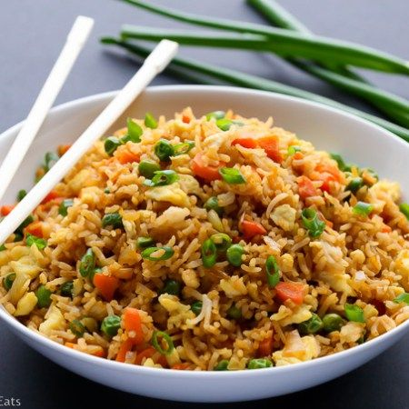

Fried Rice

A quick fried rice like you get at your favorite Chinese restaurant. A couple of eggs, baby carrots, peas, and soy sauce is all you need
ingredients
- 2 cups enriched white rice
- 4 cups water
- 1/2 cup frozen green peas
- 2 tablespoons vegetable oil
- 2 eggs
- soy sauce to taste
- 2 tablesppons sesame oil, to taste
- 2/3 cup chopped baby carrots
Steps
- In a saucepan, combine rice and water. Bring to a boil. Reduce heat, cover, and simmer for 20 mintutes.
- In a small saucepan, boil carrots in water about 3 to 5 minutes. Drop peas into boiling water, and drain.
- Heat wok over high heat. Pour in oil, then stir in carrots and peas; cook about 30 seconds. Crack in eggs, stirring quickly to scramble eggs with vegetables. Stir in cooked rice. Shake in soy sauce, and toss rice to coat. Drizzle with sesame oil, and toss again.